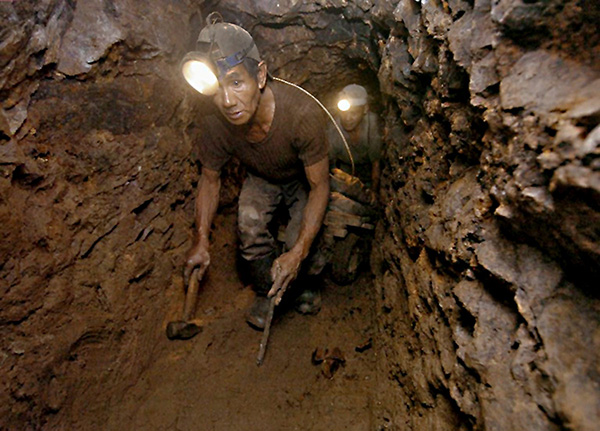
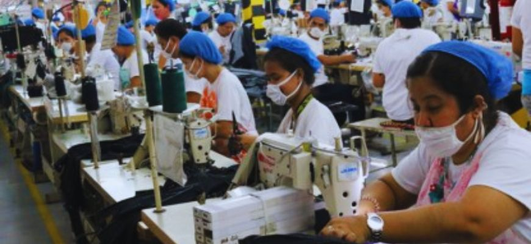
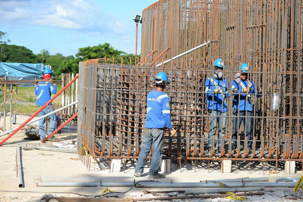
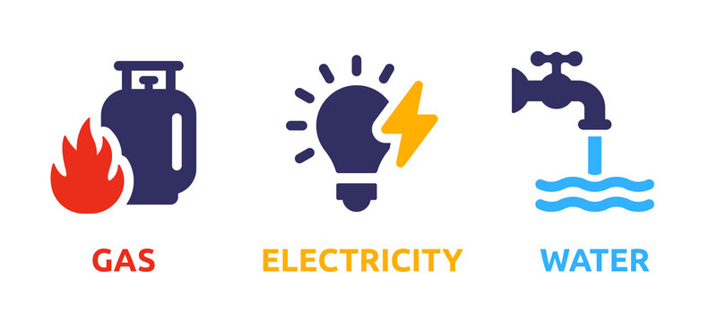

Lesson 3 : Industriya
pagpoproseso ng mga hilaw na materyales at paggawa ng mga produkto na kinakailangan para sa pampublikong pamilihan.
Layunin ng Sektor ng Industriya: Maiproseso ang mga hilaw o sangkap na materyal upang makabuo ng mga produktong ginagamit ng tao.
SUBSEKTOR NG INDUSTRIYA
Pagmimina (Mining):

- - Pagkuha & proseso ng mga yamang mineral (metal, di-metal, o enerhiya) upang gawing tapos na produkto o kabahagi ng isang yaring kalakal.
- - Mismong produkto ang nagbibigay ng kita para sa bansa.
Pagmamanupaktura (Manufacturing):

- - Paggawa ng mga produkto sa pamamagitan ng manual labor o ng mga makina.
- - Nagkakaroon ng pisikal o kemikal na transpormasyon ang mga materyal o bahagi nito sa pagbuo ng mga bagong produkto.
Konstruksyon (Construction):

- - Kabilang dito ang mga gawaing tulad ng pagtatayo ng mga gusali, estruktura, at iba pang land improvements.
Utilities:

- - Binubuo ng mga kompanyang ang pangunahing layunin ay matugunan ang pangangailangan ng mga mamamayan tulad ng tubig, kuryente, & gas.
Kahalagahan ng Sektor ng Industriya sa Pambansang Kaunlaran
- Ito’y tumatanggap ng mga produkto mula sa sektor ng agrikultura & ng serbisyo mula sa sektor ng paglilingkod.
- Ang pag-unlad ng sektor ng industriya ay nangangahulugang pagkakaroon ng mas-maraming trabaho para sa mga tao.
- Ang mga produktong ineeksport ng sektor ng industriya ay nagpapasok ng dolyar sa bansa.
Ang Pagkakaugnay ng Sektor ng Agrikultura at Industriya tungo sa Pag-unlad ng Kabuhayan
- Nagmumula sa agrikultura ang mga hilaw na sangkap na ginagamit sa pagbuo ng mga produkto ng industriya.
- Ang mga sangkap ay nagkakaroon ng transpormasyon dahil sa mga lakas-paggawa ng mga manggagawa.
- Makikita ang dami ng lakas-paggawa sa mga mamimili.
- Ang agrikultura ang pinagmulan ng pagkain ng mga industriya na siyang tumutugon sa mga pagkaing kinakailangan ng tao.
Mga Suliranin ng Sektor ng Industriya
- Pondo & Kompetisyon
- Paghina ng Lokal na Industriya
- Demand
Mga Patakarang Pang-ekonomiya na Nakakatulong:
Filipino First Policy:
- - Ipinatupad ni dating Pangulong Carlos P. Garcia; bigyan higit na malaking partisipasyon ang mga industriyang Pilipino sa pamamahagi ng pinagkukunang yaman.
Oil Deregulation Law (RA 8479):
- - Nagbukas ng lubos na kalayaan at kapangyarihan ang mga negosyante sapagkat ang pamahalaan ay hindi nakikialam sa pagtatakda ng presyo, pag-aangkat, at pagluluwas ng mga produktong petrolyo, at pagtatayo ng gasoline stations, depots, and refineries.
Patakaran sa Microfinancing:
- - Serbisyong pampinansyal kung saan pinauutang ng mga bangko ang mga interesadong magsasaka at maliliit na mangangalakal ng puhunan upang magsimula ng negosyo.
Patakaran sa Online Business:
- • Online Shopping/Retailing
- • Online Intermediary Service
- • Online Advertisement / Classified Ads
- • Online Auction
Republic Act 1180 (Retail Nationalization Act of 1964)
- - Ipinatupad ang 10 taong palugit na ibinigay sa mga dayuhang capitalist na isaayos ang kanilang mga negosyo dahil ipinareserba ang negosyo ng retail para sa mga Pilipino
Republic Act 8762 (Retail Trade Liberalization Act of 2000)
- - batas na binuksan ang kalakalan para sa mga dayuhan at isulong ang kompetisyon sa industriya
Build-Operate-Transfer (BOT)
- - batas na binuksan ang kalakalan para sa mga dayuhan at isulong ang kompetisyon sa industriya
Asset Privatization Trust (APT)
- - Pangasiwaan ang nagbebenta ng mga korporasyong pagmamay-ari ng pamahalaan sa bribadong pagmamay-ari.
↑ Back to Top